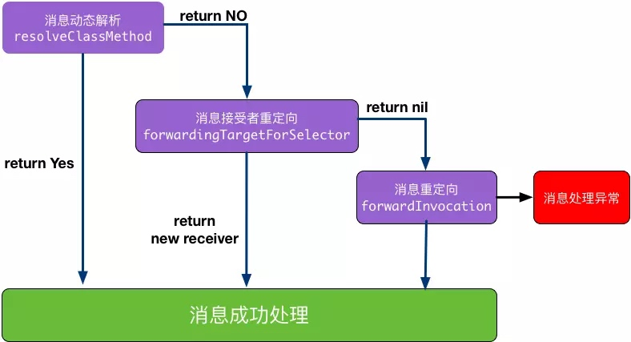
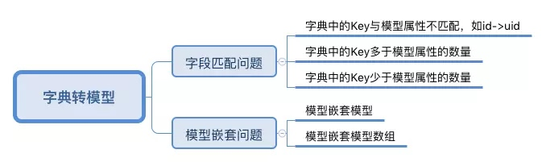
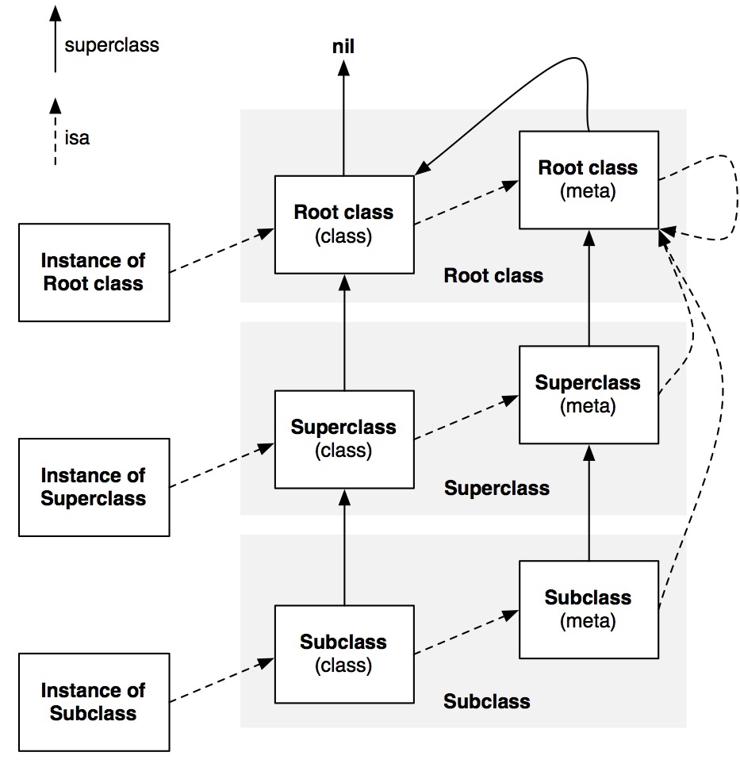
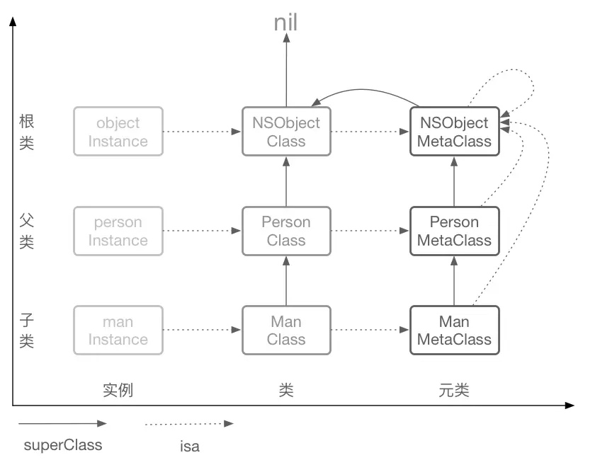

1、Runtime是什么？
首先需要理解静态语言和动态语言，才能更好的理解Runtime
静态语言：比如C语言，编译阶段就需要决定好调用哪个函数，如果函数未实现就会编译报错。
动态语言：比如OC，编译阶段不决定真正调用哪个函数，只要函数声明过，即使没有实现也不会报错。把决定调用的工作推迟到运行阶段。
所以就需要一个运行时系统来执行编译后的代码，正确的调用函数。Runtime就是OC的运行时系统。
决定函数调用是Runtime最重要的工作。
2、[receiver message] 背后到底发生了什么？
编译器会将 调用方法转成下面这个方法的调用：
objc_msgSend(id _Nullable self, SEL _Nonnull op, ...)
第一个参数是id 类型，它是一个指向类实例的指针：
1 | /// A pointer to an instance of a class. |
这里 objc_object 是一个结构体：1
2
3
4/// Represents an instance of a class.
struct objc_object {
Class _Nonnull isa OBJC_ISA_AVAILABILITY;
};
isa 指针不总是指向实例对象所属的类，不能依靠它来确定类型。因为KVO的原理就是把对象的isa指针指向一个中间类。可以用 class 方法来确定实例对象的类。
Class 其实是一个指向 objc_class 的指针：1
2/// An opaque type that represents an Objective-C class.
typedef struct objc_class *Class;
objc_class 的结构大概是这样的：1
2
3struct objc_class {
Class _Nonnull isa OBJC_ISA_AVAILABILITY;
} OBJC2_UNAVAILABLE;
objc_class 里包含：1
2
3
4
5
6
7
8
9Class _Nullable super_class; //父类
const char * _Nonnull name //类名;
long version; //版本
long info; //
long instance_size; //
struct objc_ivar_list * _Nullable ivars; //实例变量列表
struct objc_method_list * _Nullable * _Nullable methodLists;//方法列表
struct objc_cache * _Nonnull cache; //缓存
struct objc_protocol_list * _Nullable protocols; //协议列表
第二个参数 SEL 本质是 objc_selector 结构体
1 | /// An opaque type that represents a method selector. |
可以用 Objc编译命令 @selector() 或者 Runtime 系统的 sel_registerName 函数来获得一个 SEL 类型的方法选择器。
不同类中相同名字的方法对应的 方法选择器 是相同的，即使参数类型不同。
上面的调用中[receiver message]，在编译阶段确定了向哪个接收者发送message消息，但是接受者具体如何响应决定于运行时的判断。
具体流程是：
1、检测selector 是不是需要忽略的。比如 Mac OS X 开发，有了垃圾回收就不理会retain,release 这些函数了。
2、检测target 是不是nil 对象。ObjC 的特性是允许对一个 nil对象执行任何一个方法不会 Crash，因为会被忽略掉。
3、如果上面两个都过了，那就开始查找这个类的 IMP，先从 cache 里面找，若可以找得到就跳到对应的函数去执行。
4、如果在cache里找不到就找一下方法列表methodLists。
5、如果methodLists找不到，就到超类的方法列表里寻找，一直找，直到找到NSObject类为止。
6、如果还找不到，Runtime就提供了如下三种方法来处理：动态方法解析、消息接受者重定向、消息重定向，这三种方法的调用关系如下图：

其中：
1.动态方法解析(Dynamic Method Resolution)
所谓动态解析，我们可以理解为通过cache和方法列表没有找到方法时，Runtime为我们提供一次动态添加方法实现的机会，主要用到的方法如下：
1 | //OC方法： |
- 消息接收者重定向
我们注意到动态方法解析过程中的两个resolve方法都返回了布尔值，当它们返回YES时方法即可正常执行，但是若它们返回NO，消息发送机制就进入了消息转发(Forwarding)的阶段了，我们可以使用Runtime通过下面的方法替换消息接收者的为其他对象，从而保证程序的继续执行。
1 | //重定向类方法的消息接收者，返回一个类; |
- 消息重定向
当以上两种方法无法生效，那么这个对象会因为找不到相应的方法实现而无法响应消息，此时Runtime系统会通过forwardInvocation：消息通知该对象，给予此次消息发送最后一次寻找IMP的机会：
- (void)forwardInvocation:(NSInvocation *)anInvocation；
每个对象都从NSObject类中继承了forwardInvocation：方法，但是NSObject中的这个方法只是简单的调用了doesNotRecongnizeSelector:方法，提示我们错误。所以我们可以重写这个方法：对不能处理的消息做一些默认处理，也可以将消息转发给其他对象来处理，而不抛出错误。
anInvocation是forwardInvocation唯一参数，它封装了原始的消息和消息参数。正是因为它，我们还不得不重写另一个函数：methodSignatureForSelector。这是因为在forwardInvocation: 消息发送前，Runtime系统会向对象发送methodSignatureForSelector消息，并取到返回的方法签名用于生成NSInvocation对象。
注意：
1、forwardingTargetForSelector仅支持一个对象的返回，也就是说消息只能被转发给一个对象，而forwardInvocation可以将消息同时转发给任意多个对象，这就是两者的最大区别。
2、虽然理论上可以重载doesNotRecognizeSelector函数实现保证不抛出异常（不调用super实现），但是苹果文档着重提出“一定不能让这个函数就这么结束掉，必须抛出异常”
3、forwardInvocation甚至能够修改消息的内容，用于实现更加强大的功能。
#3、isKindOfClass:、isSubclassOfClass:和isMemberOfClass: 分别是什么？有什么区别？原理是什么？
isKindOfClass:判断一个对象是否是 参数 的实例，或者参数父类的实例
isMemberOfClass: 判断一个对象是不是当前类的一个实例，是否跟父类有关系他不管，必须是当前类
isSubclassOfClass：+方法，表示调用该方法的类 是不是 参数类的一个子类 或者 是这个类的本身，和isKindOfClass类似
1 | + (BOOL)isKindOfClass:(Class)cls { |
#4、class 方法返回的是什么？原理是什么？- (Class)class; //返回一个对象的类对象+ (Class)class; //给类对象发送class消息，会返回类对象自身
内部实现大概是这样：1
2
3
4
5
6+ (Class)class{
return self;
}
- (Class)class{
return object_getClass(self);
}
而 object_getClass() 方法实际上是返回对象的isa 指针所指的对象：1
2
3
4Class object_getClass(id obj){
if (obj) return obj->getIsa();
else return Nil;
}
5、还有什么Runtime提供的方法？
1 | -respondsToSelector: //检查对象能否响应指定的消息； |
6、在类方法中self是谁？
在实例方法中self是 实例对象 [self class] 是类对象
在类方法中self是 类对象 [self class] 也是类对象，其实就是他自己
7、 Runtime能用来干啥?
一、动态方法交换：Method Swizzling
1、实现动态方法交换(Method Swizzling )是Runtime中最具盛名的应用场景，其原理是：通过Runtime获取到方法实现的地址，进而动态交换两个方法的功能。使用到关键方法如下：1
2
3
4
5
6//获取类方法的Mthod
Method _Nullable class_getClassMethod(Class _Nullable cls, SEL _Nonnull name)
//获取实例对象方法的Mthod
Method _Nullable class_getInstanceMethod(Class _Nullable cls, SEL _Nonnull name)
//交换两个方法的实现
void method_exchangeImplementations(Method _Nonnull m1, Method _Nonnull m2)
2.拦截并替换系统方法
Runtime动态方法交换更多的是应用于系统类库和第三方框架的方法替换。在不可见源码的情况下，我们可以借助Rutime交换方法实现，为原有方法添加额外功能，这在实际开发中具有十分重要的意义。
一般放到 +load 方法里：1
2
3
4
5
6
7
8
9//load方法不需要手动调用，iOS会在应用程序启动的时候自动调起load方法，而且执行时间较早，所以在此方法中执行交换操作比较合适。
+ (void)load{
//获取系统方法地址
Method sytemMethod = class_getClassMethod([UIFont class], @selector(systemFontOfSize:));
//获取自定义方法地址
Method customMethod = class_getClassMethod([UIFont class], @selector(zs_systemFontOfSize:));
//交换两个方法的实现
method_exchangeImplementations(sytemMethod, customMethod);
}
二、实现分类添加新属性
我们在开发中常常使用类目Category为一些已有的类扩展功能。虽然继承也能够为已有类增加新的方法，而且相比类目更是具有增加属性的优势，但是继承毕竟是一个重量级的操作，添加不必要的继承关系无疑增加了代码的复杂度。
有时候需要给系统的一些类添加一些属性，也可以用这个实现。
遗憾的是，OC的类目并不支持直接添加属性，如果我们直接在分类的声明中写入Property属性，那么只能为其生成set与get方法声明，却不能生成成员变量，直接调用这些属性还会造成崩溃。
所以为了实现给分类添加属性，我们还需借助Runtime的关联对象(Associated Objects)特性，它能够帮助我们在运行阶段将任意的属性关联到一个对象上，下面是相关的三个方法：1
2
3
4
5
6
7
8
9
10
11
12
13
14
15
16
17
18
19
20
21
22
23
24
25
26
27
28
29/**
1.给对象设置关联属性
@param object 需要设置关联属性的对象，即给哪个对象关联属性
@param key 关联属性对应的key，可通过key获取这个属性，
@param value 给关联属性设置的值
@param policy 关联属性的存储策略(对应Property属性中的assign,copy，retain等)
OBJC_ASSOCIATION_ASSIGN @property(assign)。
OBJC_ASSOCIATION_RETAIN_NONATOMIC @property(strong, nonatomic)。
OBJC_ASSOCIATION_COPY_NONATOMIC @property(copy, nonatomic)。
OBJC_ASSOCIATION_RETAIN @property(strong,atomic)。
OBJC_ASSOCIATION_COPY @property(copy, atomic)。
*/
void objc_setAssociatedObject(id _Nonnull object,
const void * _Nonnull key,
id _Nullable value,
objc_AssociationPolicy policy)
/**
2.通过key获取关联的属性
@param object 从哪个对象中获取关联属性
@param key 关联属性对应的key
@return 返回关联属性的值
*/
id _Nullable objc_getAssociatedObject(id _Nonnull object,
const void * _Nonnull key)
/**
3.移除对象所关联的属性
@param object 移除某个对象的所有关联属性
*/
void objc_removeAssociatedObjects(id _Nonnull object)
注意：key与关联属性一一对应，我们必须确保其全局唯一性，常用我们使用@selector(methodName)作为key。
三、获取类的详细信息
1.获取属性列表1
2
3
4
5
6
7unsigned int count;
objc_property_t *propertyList = class_copyPropertyList([self class], &count);
for (unsigned int i = 0; i<count; i++) {
const char *propertyName = property_getName(propertyList[i]);
NSLog(@"PropertyName(%d): %@",i,[NSString stringWithUTF8String:propertyName]);
}
free(propertyList);
2.获取所有成员变量1
2
3
4
5
6
7Ivar *ivarList = class_copyIvarList([self class], &count);
for (int i= 0; i<count; i++) {
Ivar ivar = ivarList[i];
const char *ivarName = ivar_getName(ivar);
NSLog(@"Ivar(%d): %@", i, [NSString stringWithUTF8String:ivarName]);
}
free(ivarList);
3.获取所有方法1
2
3
4
5
6
7Method *methodList = class_copyMethodList([self class], &count);
for (unsigned int i = 0; i<count; i++) {
Method method = methodList[i];
SEL mthodName = method_getName(method);
NSLog(@"MethodName(%d): %@",i,NSStringFromSelector(mthodName));
}
free(methodList);
4.获取当前遵循的所有协议1
2
3
4
5
6
7__unsafe_unretained Protocol **protocolList = class_copyProtocolList([self class], &count);
for (int i=0; i<count; i++) {
Protocol *protocal = protocolList[i];
const char *protocolName = protocol_getName(protocal);
NSLog(@"protocol(%d): %@",i, [NSString stringWithUTF8String:protocolName]);
}
free(propertyList);
注意：C语言中使用Copy操作的方法，要注意释放指针，防止内存泄漏
四、解决同一方法高频率调用的效率问题
Runtime源码中的IMP作为函数指针，指向方法的实现。通过它，我们可以绕开发送消息的过程来提高函数调用的效率。当我们需要持续大量重复调用某个方法的时候，会十分有用，具体代码示例如下：1
2
3
4
5
6void (*setter)(id, SEL, BOOL);
int i;
setter = (void (*)(id, SEL, BOOL))[target methodForSelector:@selector(setFilled:)];
for ( i = 0 ; i < 1000 ; i++ )
setter(targetList[i], @selector(setFilled:), YES);
五、方法动态解析与消息转发
1.动态方法解析：动态添加方法
Runtime足够强大，能够让我们在运行时动态添加一个未实现的方法，这个功能主要有两个应用场景：
场景1：动态添加未实现方法，解决代码中因为方法未找到而报错的问题；
场景2：利用懒加载思路，若一个类有很多个方法，同时加载到内存中会耗费资源，可以使用动态解析添加方法。方法动态解析主要用到的方法如下：1
2
3
4
5
6
7
8
9
10
11
12
13
14
15
16
17
18
19
20//OC方法：
//类方法未找到时调起，可于此添加类方法实现
+ (BOOL)resolveClassMethod:(SEL)sel
//实例方法未找到时调起，可于此添加实例方法实现
+ (BOOL)resolveInstanceMethod:(SEL)sel
//Runtime方法：
/**
运行时方法：向指定类中添加特定方法实现的操作
@param cls 被添加方法的类
@param name selector方法名
@param imp 指向实现方法的函数指针
@param types imp函数实现的返回值与参数类型
@return 添加方法是否成功
*/
BOOL class_addMethod(Class _Nullable cls,
SEL _Nonnull name,
IMP _Nonnull imp,
const char * _Nullable types)
2.解决方法无响应崩溃问题
执行OC方法其实就是一个发送消息的过程，若方法未实现，我们可以利用方法动态解析与消息转发来避免程序崩溃，主要使用到的相关方法如下：
消息接收者重定向1
2
3
4
5//重定向类方法的消息接收者，返回一个类
- (id)forwardingTargetForSelector:(SEL)aSelector
//重定向实例方法的消息接受者，返回一个实例对象
- (id)forwardingTargetForSelector:(SEL)aSelector
消息重定向1
2
3- (void)forwardInvocation:(NSInvocation *)anInvocation；
- (NSMethodSignature*)methodSignatureForSelector:(SEL)aSelector;
六、动态操作属性
1.动态修改属性变量
现在假设这样一个情况：我们使用第三方框架里的Person类，在特殊需求下想要更改其私有属性nickName，这样的操作我们就可以使用Runtime可以动态修改对象属性。
基本思路：首先使用Runtime获取Peson对象的所有属性，找到nickName，然后使用ivar的方法修改其值。具体的代码示例如下：1
2
3
4
5
6
7
8
9
10
11
12
13
14
15
16Person *ps = [[Person alloc] init];
NSLog(@"ps-nickName: %@",[ps valueForKey:@"nickName"]); //null
//第一步：遍历对象的所有属性
unsigned int count;
Ivar *ivarList = class_copyIvarList([ps class], &count);
for (int i= 0; i<count; i++) {
//第二步：获取每个属性名
Ivar ivar = ivarList[i];
const char *ivarName = ivar_getName(ivar);
NSString *propertyName = [NSString stringWithUTF8String:ivarName];
if ([propertyName isEqualToString:@"_nickName"]) {
//第三步：匹配到对应的属性，然后修改；注意属性带有下划线
object_setIvar(ps, ivar, @"梧雨北辰");
}
}
NSLog(@"ps-nickName: %@",[ps valueForKey:@"nickName"]); //梧雨北辰
总结：此过程类似KVC的取值和赋值
2.实现 NSCoding 的自动归档和解档
归档是一种常用的轻量型文件存储方式，但是它有个弊端：在归档过程中，若一个Model有多个属性，我们不得不对每个属性进行处理，非常繁琐。
归档操作主要涉及两个方法：encodeObject 和 decodeObjectForKey，现在，我们可以利用Runtime来改进它们，关键的代码示例如下：1
2
3
4
5
6
7
8
9
10
11
12
13
14
15
16
17
18
19
20
21
22
23
24
25
26
27
28
29
30
31
32
33
34//原理：使用Runtime动态获取所有属性
//解档操作
- (instancetype)initWithCoder:(NSCoder *)aDecoder{
self = [super init];
if (self) {
unsigned int count = 0;
Ivar *ivarList = class_copyIvarList([self class], &count);
for (int i = 0; i < count; i++) {
Ivar ivar = ivarList[i];
const char *ivarName = ivar_getName(ivar);
NSString *key = [NSString stringWithUTF8String:ivarName];
id value = [aDecoder decodeObjectForKey:key];
[self setValue:value forKey:key];
}
free(ivarList); //释放指针
}
return self;
}
//归档操作
- (void)encodeWithCoder:(NSCoder *)aCoder{
unsigned int count = 0;
Ivar *ivarList = class_copyIvarList([self class], &count);
for (NSInteger i = 0; i < count; i++) {
Ivar ivar = ivarList[i];
NSString *key = [NSString stringWithUTF8String:ivar_getName(ivar)];
id value = [self valueForKey:key];
[aCoder encodeObject:value forKey:key];
}
free(ivarList); //释放指针
}
3.实现字典与模型的转换
字典数据转模型的操作在项目开发中很常见，通常我们会选择第三方如YYModel；其实我们也可以自己来实现这一功能，主要的思路有两种：KVC、Runtime.总结字典转化模型过程中需要解决的问题如下：

现在，我们使用Runtime来实现字典转模型的操作，大致的思路是这样：
借助Runtime可以动态获取成员列表的特性，遍历模型中所有属性，然后以获取到的属性名为key，在JSON字典中寻找对应的值value；再将每一个对应Value赋值给模型，就完成了字典转模型的目的。
首先准备下面的JSON数据用于测试：1
2
3
4
5
6
7
8
9
10
11
12
13
14
15
16
17
18
19
20
21{
"id":"2462079046",
"name": "梧雨北辰",
"age":"18",
"weight":140,
"address":{
"country":"中国",
"province": "河南"
},
"courses":[{
"name":"Chinese",
"desc":"语文课"
},{
"name":"Math",
"desc":"数学课"
},{
"name":"English",
"desc":"英语课"
}
]
}
具体的代码实现流程如下：
步骤1：创建NSObject的类目NSObject+ZSModel，用于实现字典转模型
1 | @interface NSObject (ZSModel) |
8、下面的代码输出什么？
1 | @implementation Son : Father |
结果是：
1 | 两个都打印 Son |
[self class] 打印Son比较好理解
为什么 [super class] 也打印Son呢？
原因是： [super class] 会被编译成 id objc_msgSendSuper ( struct objc_super *super, SEL op, ... );,
objc_super 的结构是：
1 | struct objc_super { |
当我们使用super来接收消息时，编译器会生成一个objc_super结构体。结构体的receiver就是当前类的对象，与self相同；superClass指向当前类的父类。
而 objc_msgSendSuper 函数实际的操作是：从objc_super结构体指向的superClass的方法列表开始查找selector，找到后以objc->receiver去调用这个selector，最后的操作流程就是如下方式了1
objc_msgSend(objc_super->receiver, @selector(xxx))
那看起来不就和直接调 objc_msgSend(receiver, @selector(xxx)) 一样了吗？
区别是 直接调用是从当前类的方法列表开始查找selector，而objc_msgSendSuper是从父类开始查找
#9、下面代码输出啥？1
2
3
4BOOL res1 = [(id)[NSObject class] isKindOfClass:[NSObject class]];
BOOL res2 = [(id)[NSObject class] isMemberOfClass:[NSObject class]];
BOOL res3 = [(id)[Sark class] isKindOfClass:[Sark class]];
BOOL res4 = [(id)[Sark class] isMemberOfClass:[Sark class]];
第一个是YES ，其他都是NO
1 | - (BOOL)isKindOfClass:(Class)cls { |
1 | + (Class)class{ |


第一个：
[NSObject class] 返回的是 NSObject 类对象 （ NSObject Class）1
2
3
4
5
6- (BOOL)isKindOfClass:(Class)cls {
for (Class tcls = [self class]; tcls; tcls = tcls->superclass) {
if (tcls == cls) return YES;
}
return NO;
}
执行 isKindOfClass 比较的时候，确定两个东西 reciver 和 参数 cls
reciver : [NSObject class] NSObject 类对象
cls : 也是 [NSObject class] NSObject 类对象
然后开始执行 isKindOfClass 方法进行比较 ：
第一次循环：
tcls = [self class] ; 因为self 是 NSObject 类对象，所以 [self class] 就是 NSObject类对象的isa指针所指的东西，就是 NSObject 的元类。
cls 是 NSObject 的类对象
所以不相等
第二次循环：
tcls = tcls->superclass tcls 当前是NSObject的元类， 元类的superclass 是NSObject的类对象
cls 是NSObject的类对象
所以想等。
第二个：
reciver : [NSObject class] NSObject 类对象
cls : 也是 [NSObject class] NSObject 类对象
然后开始执行 isMemberOfClass 方法进行比较 ：1
2
3- (BOOL)isMemberOfClass:(Class)cls {
return [self class] == cls;
}
self 是 NSObject的类对象， [self class] 是NSObject的元类
cls 是NSObject的类对象
所以不相等
第三个：
reciver : [Sark class] Sark 类对象
cls : 也是 [Sark class] Sark 类对象
然后开始执行 isKindOfClass 方法进行比较 ：
第一次循环：
tcls = [self class] ; 因为self 是 Sark 类对象，所以 [self class] 就是 Sark类对象的isa指针所指的东西，就是 Sark 的元类。
cls 是 Sark 的类对象
所以不相等
第二次循环：
tcls = tcls->superclass tcls 当前是Sark的元类， 元类的 superclass 是NSObject的元类
cls 是 Sark 的类对象
所以不相等
第三次循环：
tcls = tcls->superclass tcls 当前是NSObject的元类， 元类的superclass 是NSObject 类对象
cls 是 Sark 的类对象
所以不相等
第四次循环：
tcls = tcls->superclass tcls 当前是 NSObject 类对象， 类对象的superclass 是nil
cls 是 Sark 的类对象
跳出循环
所以不相等
第四个：
reciver : [Sark class] Sark 类对象
cls : 也是 [Sark class] Sark 类对象
然后开始执行 isMemberOfClass 方法进行比较 ：1
2
3- (BOOL)isMemberOfClass:(Class)cls {
return [self class] == cls;
}
self 是 Sark的类对象， [self class] 是Sark的元类
cls 是Sark的类对象
所以不相等
#10、下面的代码会？Compile Error / Runtime Crash / NSLog…?
1 | @interface NSObject (Sark) |
都会正常打印日志
[NSObject foo]; 因为类方法是保存在该类的元类中的，所以调用foo类方法，会去 NSObject的元类中区查找，没找到，那去元类的父类中查找，找到了。
[[NSObject new] foo]; 调用实例方法，直接查找对象方法，找到了。
#11、其他
对于Model，打印一个对象的时候，通常打印的都是地址，可以重写description方法，自动获取成员来打印。